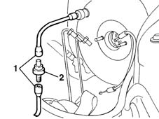

3330D22 intermediate one-way valve for brake servo - r r
- Path
- Procedures > 33 BRAKING SYSTEM > 3330 HYDRAULIC BRAKING SYSTEM > 3330D brake vacuum system > 3330D22 intermediate one-way valve for brake servo - r r
- Kind
- repair procedure (removal / refitting; the operation number is the code)
- Applies to
- engines: 1.6 16v; all production periods
- Interactive page
- https://sloeber94.github.io/elrnDB-fMltpl/en/#/2891633
Applies to: engines: 1.6 16v; all production periods
 Removing
Removing
 Refitting
Refitting1048A10 AIR CLEANER FILTERING ELEMENT - REPLACE
1. Disconnect the two sections of the vacuum pipe from the valve.
2. Remove the one-way valve.

Applies to: engines: 1.6 16v; all production periods
Refitting
RemovingFit the one-way valve, connecting it to the vacuum pipe.